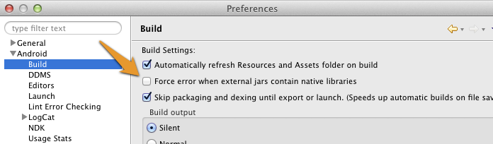
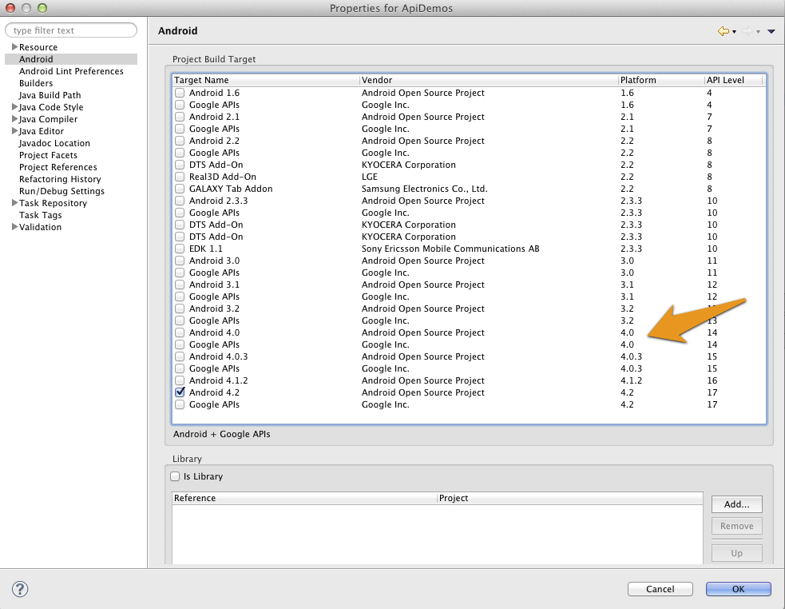
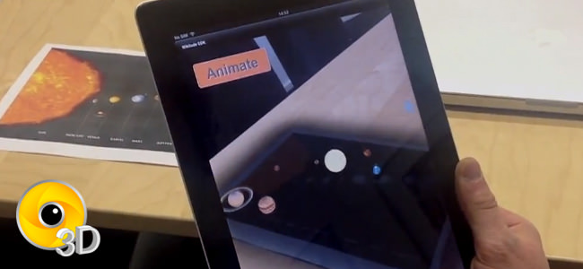
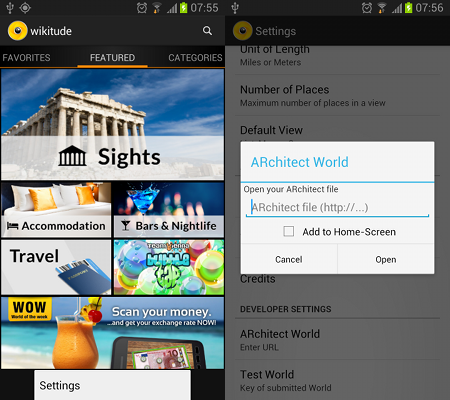
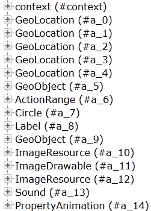
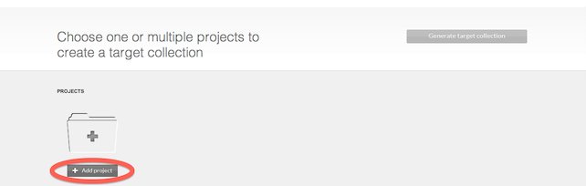
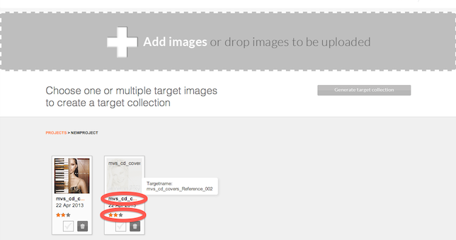
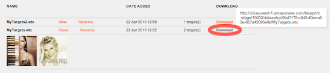

Getting started

Welcome to the Wikitude SDK. This document is designed to help you from your very first steps with the Wikitude SDK all the way through to advanced concepts and examples for developing your augmented reality project.
Recommended Usage of this Documentation
The documentation is arranged in a way to guide you through the various steps in your development process. We recommend following each of the steps outlined below and reading the documentation in the order displayed.
- Setup of your project - in this section we describe the necessary steps to setup a project in a detailed guide.
- View the samples - all of the included samples are complete augmented reality experiences which run in
SDKExamplesapp. Browse through this section and get an idea of what the SDK is capable of. The relevant parts of the samples are described in more detail to highlight the applied concepts and patterns. These examples are designed to help you get off to a great start with the Wikitude SDK. - Write your own Architect World - this section will introduce you to best practices for your development workflow once you write your own code for your augmented reality experience.
- Get good at what you do - the Wikitude SDK comes with several tools which help you to develop more complex augmented reality experiences. This section covers how to use these tools and how they will assist you in your daily work.
The Wikitude SDK - Augmented Reality for your own app
The Wikitude SDK is a software library and framework for mobile apps used to create augmented reality experiences. The SDK supports any kind of geo-based use case as well as use cases which require image recognition and tracking technology.
How to code for the Wikitude SDK
The Wikitude SDK builds heavily on web technologies (HTML, JavaScript, CSS) to allow developers to write cross platform augmented reality experiences. These augmented reality experiences are called ARchitect worlds and are basically ordinary HTML pages that can utilize the ARchitect API to create objects in augmented reality.
Integrating the Wikitude SDK into your application is done by adding the platform specific view component called ARchitectView to your applications user interface. See the setup guide for how to setup a native project and load an ARchitect World.
Get started with writing augmented reality experiences by viewing through the examples included in the SDK. Each example is explained in detail in this documentation. Additional information about the ARchitect API can be found in the included API specification.
The Wikitude Developer Portal
The Wikitude Developer Portal should be your first stop when you have specific development related questions. The portal hosts a very active Developer Community Forum where Wikitude staff members are constantly assisting other developers with helpful tips and advice. A Knowledge Base helps with various questions.
Feedback and Contact
We are always interested in your feedback and suggestions how we can improve this documentation. Please use the contact form on www.wikitude.com or visit us on Google+ or Facebook
Setup Guide Android

Project Setup
- Create a new Android Application Project (There is also a working SampleProject bundled in this SDK, where all these steps are already made)
- Create a
libsfolders in your project root directory and copylibs/wikitudesdk.jar In Eclipse enter
Preferences->Android->Buildand ensure the optionForce error when external jars contain native librariesis unchecked
Add the following permissions to your Manifest.xml
<uses-permission android:name="android.permission.INTERNET" />
<uses-permission android:name="android.permission.ACCESS_COARSE_LOCATION" />
<uses-permission android:name="android.permission.ACCESS_FINE_LOCATION" />
<uses-permission android:name="android.permission.ACCESS_NETWORK_STATE" />
<uses-permission android:name="android.permission.ACCESS_WIFI_STATE" />
<uses-permission android:name="android.permission.ACCESS_GPS" />
<uses-permission android:name="android.permission.CAMERA" />
<uses-permission android:name="android.permission.INTERNET" />
<uses-permission android:name="android.permission.WRITE_EXTERNAL_STORAGE" />
<uses-feature android:name="android.hardware.camera" android:required="true" />
<uses-feature android:name="android.hardware.location" android:required="true" />
<uses-feature android:name="android.hardware.sensor.accelerometer" android:required="true" />
<uses-feature android:name="android.hardware.sensor.compass" android:required="true" />
<uses-feature android:glEsVersion="0x00020000" android:required="true" />
<uses-sdk android:targetSdkVersion="16" android:minSdkVersion="8"/>- The activity holding the AR-View (called
architectViewin the following) must have setandroid:configChanges="screenSize|orientation"in theAndroidManifest.xml, for example this could look like:
<activity android:name="com.yourcompany.yourapp.YourArActivity"
android:configChanges="screenSize|orientation"/>AR View in Activity
Keep in mind that the Wikitude SDK is not a native Android SDK as you know from other SDK's. The basic concept is to add a so called architectView in your project and notify it about lifecycle events. The architectView creates a Camera-Surface and handles sensor events.
The experience itself, named ARchitect World, is implemented in JavaScript and packaged in your application's asset-folder (as in this project) or on your own server.
ARchitectWorlds are written in HTML/JavaScript and call methods in Wikitude's AR-namespace (e.g. AR.GeoObject).
You must include
<script src="architect://architect.js"></script>in ARchitect World html files to use AR namespace and the architectView will handle them properly (To test an ARchitect World on a desktop browser, you must include ade.js tool instead to avoid JavaScript Errors and see a development console)
It is recommended to handle augmented reality in a separate Activity.
Declare the architectView inside a layout XML.
E.g. Add this within FrameLayout's parent-tags
<com.wikitude.architect.ArchitectView android:id="@+id/architectView"
android:layout_width="fill_parent" android:layout_height="fill_parent"/>ArchitectView is creating a camera surface so ensure to properly release camera in case you're using it somewhere else in your application.
Besides the rear-camera the ArchitectView also makes use of compass and accelerometer values, requires OpenGL 2.0 and at least Android 2.2.
ArchitectView.isDeviceSupported(Context context) checks wether the current device has all required hard- and software in place or not.
Note: Make AR-View only accessible to supported devices
It is very important to notify the ArchitectView about life-cycle events of the Activity.
Call architectView's onCreate(), onPostCreate(), onPause, onDestroy() inside your Activity's lifecycle methods.
Best practice is to define a member variable for the architectView in your Activity. Set it right after setContentViewin Activity's onCreate(), and then access architectView via member-variable later on.
this.architectView = (ArchitectView)this.findViewById( R.id.architectView );
final ArchitectConfig config = new ArchitectConfig( "" /* license key */ );
this.architectView.onCreate( config );Activity's onPostCreate() is the best place to load the AR-Experience.
this.architectView.onPostCreate();
this.architectView.load( "YOUR-AR-URL" );The architectView.load() argument is the path to the html file that defines your AR experience. It can be relative to the asset folder root or a web-url (starting with http:// or https://).
e.g. architectView.load('arexperience.html') opens the html in your project's assets-folder, whereat architectView.load('http://your-server.com/arexperience.html') loads the file from a server.
Note: You can only pass arguments to the html file when loading it via url. architectView.load('arexperience.html?myarg=1') does not work.
Location
Management of the location is important in geo-based augmented reality applications. Depending on the use-case location is used via GPS or network and may be updated every second or once in a while.
Although the SDKExamples- project provides a basic implementation of a LocationProvider this is by far not the best location strategy available for Android.
Please use your own advanced location strategy implementation in case you have special requirements.
Supported Devices
Wikitude SDK is working on devices fulfilling the following requirements:
- Android 2.2, SDK=8 (but running way faster on Android 4+ )
- Compass
- GPS and / or network positioning
- Accelerometer
- High resolution devices (hdpi) with at least dual core preferred (may lag on others)
- Rear-facing camera
- OpenGL 2.0
You can use static method ArchitectView.isDeviceSupported(), to check whether a devices is support. The method returns false if the device is not supported. It is up to the developer to not launch ARView on unsupported devices and tell the user why AR is not enabled.
Note: Wikitude SDK is not working on HTC Desire X (missing compass), Google Nexus 7 (missing rear-facing cam) and some low-resolution devices that do not support openGL 2.0
Examples
The following examples should give you an overview of the capabilities offered by the Wikitude SDK. Each ARchitect World is capable of operating without modifications on all supported platforms.
Each of the included ARchitect World is structured as following:
index.html: entry point for the ARchitect Worldjs/*: includes the necessary JavaScript filescss/*: css style sheets requiredassets/*: contains images, 3D models and tracker files
Inside the js/ folder the main JavaScript file is named like the example. (the example Image Recognition has its JavaScript code in the js/imagerecognition.js file). Code which is mentioned in the description of the examples can be found in this file, if not explicitly stated otherwise.
Android SDK Examples
This section describes the SDK Sample project in detail and highlights the main features and use-cases of the Wikitude SDK.
The project is part of the SDK bundle and is an Android Eclipse project, ready to run on any of the supported Android devices.
Note: You cannot run Wikitude SDK project on Android Emulator due to OpenGL restrictions.
Run through the setup guide, install the sample project on your device and scroll through the sample list.
The project's asset folder contains implementation of the various ARchitect World's.
Implementation of the native Android activities is available in the src folder.
Setup
- Download latest Android SDK
- Launch ADT, which is part of the Android SDK or Eclipse with installed Android Plugin
- From the main menu bar, select
File->Import…which will open the import wizard. - Select
General->Existing Project into Workspaceand clickNext. - Choose
Select root directory, clickBrowse - Navigate to the
SDKExamplesproject folder in your filesystem. - Click
Finishto start the import. - Right click the project folder, click
PreferencesandAndroid Ensure you have very latest SDK (14+) checked in the Build Target list

Use an Android device that has all hard- and software requirements (should be similar to Samsung Galaxy S2) and enable your location services in system settings
- Enter
Settings->Applications->Developer-> checkUSB debugging - Plug in the device via USB.
- Right click the project folder again select
Run as…-Android Applicationand select the target device - The sample application is then installed onto your device
Native/JavaScript Communication
The samples mainly describe how to launch an AR experience in your Android activity - anything relevant for AR is written in the provided HTML/JS file.
Although it is highly recommended to implement logic in pure HTML and JavaScript at some point in time it makes sense to interact between native Android and the JavaScript of your AR experience.
One may for instance pass data for points of interest (POI) from native Android to JavaScript.
Define a method named newData(json) in the JavaScript file and use architectView.callJavascript(newData('" + poiDataAsJson +")') to call the method and pass over the values properly. JSON Format is the fastest way to pass bulk of information, like translations, metadata and POI information over to your JavaScript.
There are several ways to create a JSON in Android.
Sometimes events like a click in your AR experience should cause a reaction in native Android, like launching another screen when clicking a placemark or image target. To achieve that you need to register a urlListener using architectView.registerUrlListener() in the activity.
Any document.location changes to architectsdk:// will fire an event in your listener (e.g. document.location = architectsdk://YOUR-INFO). Listener is informed about the invoked url and can then react on.
Note: Missing urlListener registration will cause an HTTP error when calling document.location = architectsdk://YOUR-INFO
Image Recognition
This example shows how to recognize images in the viewfinder and overlay it with images. Furthermore it shows how to recognize multiple different images and how to react on user clicks on the overlaid elements.
For a better understanding, here are some terms that will be used in the following and other section of this documentation related to image recognition (IR).
Target: A target image and its associated extracted data that is used by the tracker to recognize an image.
Target collection: An archive storing a collection of targets that can be recognized by the tracker. A target collection can hold up to 1000 targets.
Tracker: The tracker analyzes the live camera image and detects the targets stored in its associated target collection. Multiple trackers can be created, however only one tracker can be active for recognition at any given time.
Image on Target (1/3)
With these terms in mind let's start by defining what actually should be recognized (target) and create a corresponding target collection that the tracker can use. In this case, the target collection includes the following single magazine page.

See Target Management for instructions how to create target collections which can be used in the Wikitude SDK.
This is the same process for every use of image recognition in ARchitect. You'll first need to define your targets and then create a target collection for it. Now let’s have a look at the JavaScript for enabling IR.
// Initialize Tracker
this.tracker = new AR.Tracker("assets/magazine.wtc", {
onLoaded: this.worldLoaded
});
// Create overlay for page one
var imgOne = new AR.ImageResource("assets/imageOne.png");
var overlayOne = new AR.ImageDrawable(imgOne, 1, {
offsetX: -0.15,
offsetY: 0
});
var pageOne = new AR.Trackable2DObject(this.tracker, "pageOne", {
drawables: {
cam: overlayOne
}
});First an AR.Tracker needs to be created in order to start the recognition engine. It is initialized with a URL specific to the target collection. Optional parameters are passed as object in the last argument. In this case a callback function for the onLoaded trigger is set. Once the tracker is fully loaded the function worldLoaded() is called.
The next step is to create the augmentation. In this example an image resource is created and passed to the AR.ImageDrawable. A drawable is a visual component that can be connected to an IR target (AR.Trackable2DObject) or a geolocated object (AR.GeoObject). The AR.ImageDrawable is initialized by the image and its size. Optional parameters allow for position it relative to the recognized target.
The last line combines everything together by creating an AR.Trackable2DObject with the previously created tracker, the name of the image target as defined in the target collection and the drawable that should augment the recognized image.
Multiple Targets (2/3)
Adding multiple targets to a target collection is straightforward. Simply follow the guide at Target Management. Each target in the target collection is identified by its id. By using this id, it is possible to create an AR.Trackable2DObject for every target in the target collection.

// Create overlay for page two
var imgTwo = new AR.ImageResource("assets/imageTwo.png");
var overlayTwo = new AR.ImageDrawable(imgTwo, 0.5, {
offsetX: 0.12,
offsetY: -0.01
});
var pageTwo = new AR.Trackable2DObject(this.tracker, "pageTwo", {
drawables: {
cam: overlayTwo
}
});Similar to the first part, the image resource and the AR.ImageDrawable for the second overlay are created. The AR.Trackable2DObject for the second page uses the same tracker but with a different id.
Interactivity (3/3)
The final step is to add interactivity to the image target. For this example a button is added to each target that opens a webpage.
The button is created similar to the overlay feature. An AR.ImageResource defines the look of the button and is reused for both buttons.
this.imgButton = new AR.ImageResource("assets/wwwButton.png");For each target an AR.ImageDrawable for the button is created by utilizing the helper function createWwwButton(url, options). The returned drawable is then added to the drawables.cam array on creation of the AR.Trackable2DObject.
var pageOneButton = this.createWwwButton("http://www.wikitude.com/pageone", 0.1, {
offsetX: -0.25,
offsetY: -0.25
});
var pageOne = new AR.Trackable2DObject(this.tracker, "pageOne", {
drawables: {
cam: [overlayOne, pageOneButton]
}
});As the button should be clickable the onClick trigger is defined in the options passed to the AR.ImageDrawable. In general each drawable can be made clickable by defining its onClick trigger.
createWwwButton: function createWwwButtonFn(url, size, options) {
options.onClick = function() {
AR.context.openInBrowser(url);
};
return new AR.ImageDrawable(this.imgButton, size, options);
},The function assigned to the click trigger calls AR.context.openInBrowser with the specified URL, which opens the URL in the browser.
Bonus: Sparkles
This section adds a little bonus to the above example. Sprite sheet animations can be used to animate images similar to animated GIFs and are used in this example to add sparkles to the overlay.
A sprite sheet is an image file that contains all key frame images required for the animation. The key frame image size (width and height) is passed at creation time and must be equal for all key frame images. Key frame images will be managed in an array, starting with entry 0. The key frame image array will be filled from left to right, row by row. Any partly filled key frames at the edge of the sprites sheet will be ignored.

First the image resource is created which is used for creating the AR.AnimatedImageDrawable. Since the width/height of the sprite sheet is 512 and it carries 16 key frames, the width and height of a single image is 128. So we set 128 as the width and height of the AnimatedImageDrawable.
// Sparkles
var imgSparkles = new AR.ImageResource("assets/imageSparkles.png");
var sparkles = new AR.AnimatedImageDrawable(imgSparkles, 0.25, 128, 128, {
offsetX: -0.2,
offsetY: 0.5,
rotation: 75
});To start the animation the order of the keyframes needs to be passed as array. Additionally the time each frame is displayed in ms and the loop count needs to be defined. In this case each image is displayed 100ms before it changes and a loop count of -1 plays the animation in an infinite loop.
sparkles.animate([0, 1, 2, 3, 4, 5, 6, 7, 8, 9, 10, 11, 12, 13, 14, 15], 100, -1);The last step is to add it as drawable to the AR.Trackable2DObject so it will be overlaid on the first page.
var pageOne = new AR.Trackable2DObject(this.tracker, "pageOne", {
drawables: {
cam: [overlayOne, pageOneButton, sparkles]
}
});Image Recognition And 3D
This example shows how to combine 3D content and image recognition. It starts by displaying a 3D model on a target and advances by adding displayed animations and interactivity. If you are not yet familiar with how to use image recognition, please have a look at the previous example Image Recognition.
3D content within Wikitude can only be loaded from Wikitude 3D Format files (.wt3). This is a compressed binary format for describing 3D content which is optimized for fast loading and handling of 3D content on a mobile device. You still can use 3D models from your favorite 3D modeling tools ( Autodesk® Maya® or Blender) but you'll need to convert them into the wt3 file format. Wikitude offers a desktop application - the Wikitude 3D Encoder, which will encode your 3D source file. The Encoder can handle Autodesk® FBX® files (.fbx) and the open standard Collada (.dae) file formats for encoding to .wt3.
For more details on how to convert your 3D content please see the Wikitude 3D Encoder section. In this example the .wt3 file has already been prepared and saved to assets/car.wt3.

As image target the following car ad is used.
3D Model on Target (1/3)
First of all create an AR.Model and pass the URL to the actual .wt3 file of the model. Additional options allow for scaling and positioning the model in the scene.
this.modelTv = new AR.Model("assets/car.wt3", {
onLoaded: this.loadingStep,
scale: {
x: 0.5,
y: 0.5,
z: 0.5
}
});In this example a function is attached to the onLoaded trigger to receive a notification once the 3D model is fully loaded. Depending on the size of the model and where it is stored (locally or remotely) it might take a some time to completely load and it is recommended to inform the user about the loading time.
Similar to 2D content the 3D model is added to the drawables.cam property of an AR.Trackable2DObject.
var trackable = new AR.Trackable2DObject(this.tracker, "tvAd", {
drawables: {
cam: this.modelTv
}
});
},This is everything that is needed to allow the 3D model appear on an image target. To adjust scaling and position of the model pass the scale and translate properties as options to the AR.Model.
Appearing Animation (2/3)
As a next step, an appearing animation is added which scales up the 3D model once the target is inside the field of vision. Creating an animation on a single property of an object is done using an AR.PropertyAnimation. Since the car model needs to be scaled up on all three axis, three animations are needed. These animations are grouped together utilizing an AR.AnimationGroup that allows them to play them in parallel.
var sx = new AR.PropertyAnimation(model, "scale.x", 0, scale, 1500, {
type: AR.CONST.EASING_CURVE_TYPE.EASE_OUT_QUAD
});
var sy = new AR.PropertyAnimation(model, "scale.y", 0, scale, 1500, {
type: AR.CONST.EASING_CURVE_TYPE.EASE_OUT_QUAD
});
var sz = new AR.PropertyAnimation(model, "scale.z", 0, scale, 1500, {
type: AR.CONST.EASING_CURVE_TYPE.EASE_OUT_QUAD
});
return new AR.AnimationGroup(AR.CONST.ANIMATION_GROUP_TYPE.PARALLEL, [sx, sy, sz]);Each AR.PropertyAnimation targets one of the three axis and scales the model from 0 to the value passed in the scale variable. An EASE_OUT_QUAD easing curve is used to create a more dynamic effect of the animation.
To get a notification once the image target is inside the field of vision the onEnterFieldOfVision trigger of the AR.Trackable2DObject is used. In the example the function appear() is attached.
appear: function appearFn () {
World.appearingAnimation.start();
}Within the appear function the previously created AR.AnimationGroup is started by calling its start() function which plays the animation once.
Interactivity (3/3)
To finish up the example, a rotating animation is added to the 3D model. It is started and paused by clicking on the button or on the 3D model.
Additionally to the 3D model an image that will act as a button is added to the image target. This can be accomplished by loading an AR.ImageResource and creating a drawable from it.
var imgReset = new AR.ImageResource("assets/resetButton.png");
var buttonReset = new AR.ImageDrawable(imgReset, 0.2, {
offsetX: 0.25,
offsetY: 0.4,
onClick: this.resetModel
});To add the AR.ImageDrawable to the image target together with the 3D model both drawables are supplied to the AR.Trackable2DObject.
var trackable = new AR.Trackable2DObject(this.tracker, "tvAd", {
drawables: {
cam: [this.modelTv, buttonReset]
},
onEnterFieldOfVision: this.appear
});The rotation animation for the 3D model is created by defining an AR.PropertyAnimation for the rotate.roll property.
// Rotation Animation
this.rotationAnimation = new AR.PropertyAnimation(this.modelTv, "rotate.roll", 0, 360, 5000);The drawables are made clickable by setting their onClick triggers. Click triggers can be set in the options of the drawable when the drawable is created. Thus, when the 3D model onClick: this.toggleAnimateModel is set in the options it is then passed to the AR.Model constructor. Similar the button's onClick: this.toggleAnimateModel trigger is set in the options passed to the AR.ImageDrawable constructor. toggleAnimateModel() is therefore called when the 3D model or the button is clicked.
Inside the toggleAnimateModel() function, it is checked if the animation is running and decided if it should be started, resumed or paused.
toggleAnimateModel: function toggleAnimateModelFn() {
if (!World.rotationAnimation.isRunning()) {
if (!World.rotating) {
World.rotationAnimation.start(-1);
World.rotating = true;
} else {
World.rotationAnimation.resume();
}
} else {
World.rotationAnimation.pause();
}
return false;
}Starting an animation with .start(-1) will loop it indefinitely.
Point Of Interest (POI)
The Point Of Interest (POI) example series will show how you can create a marker that is placed at a specific geolocation. The example is split into four different parts that depend on each other. You will have a complete and reusable marker at the end of the series which has a title, description, a selected and an idle state which animates smoothly from one to another.
POI at Location (1/4)
The first part of the series will present an image at a geolocation. To do so, we will use the AR.context.onLocationChanged() callback to get the current location. After the location has been retrieved, we will use it to place an AR.ImageDrawable there.
All JavaScript code is written in the poiatlocation.js file.
The example Image Recognition already explained how images are loaded and displayed in AR. This sample loads an AR.ImageResource when the World variable was defined. It will be reused for each marker that we will create afterwards.
The init function is used to set a custom AR.context.onLocationChanged callback function.
init: function initFn() {
AR.context.onLocationChanged = World.onLocationChanged;
}The custom World.onLocationChanged function first removes the custom callback function. This way the world won't receive any new location updates. After we have disabled further location updates, a marker will be created using the World.createMarkerAtLocation function.
onLocationChanged: function onLocationChangedFn(latitude, longitude, altitude, accuracy) {
AR.context.onLocationChanged = null;
World.createMarkerAtLocation(latitude + 0.01, longitude - 0.0005, altitude - 0.06);
}The createMarkerAtLocation function creates a new marker object at the specified geolocation. To do this, an AR.GeoLocation, AR.ImageDrawable and AR.GeoObject will be used.
The AR.GeoLocation object will be initialized with latitude, longitude and altitude . It defines the geolocation where the marker should be drawn. To actually draw an image, the AR.ImageDrawable is used with the AR.ImageResource, defined in the World variable. An AR.GeoObject connects one or more AR.GeoLocation with multiple AR.Drawables. The AR.Drawables can be defined for multiple targets. A target can be the camera, the radar or a direction indicator. Both the radar and direction indicators will be covered in more detail in later examples.
createMarkerAtLocation: function createMarkerAtLocationFn(latitude, longitude, altitude) {
var markerLocation = new AR.GeoLocation(latitude, longitude, altitude);
var markerDrawable = new AR.ImageDrawable(World.markerDrawable, 3);
var markerObject = new AR.GeoObject(markerLocation, {
drawables: {
cam: markerDrawable
}
});
}POI with Label (2/4)
The second part adds a title and description label to our marker object and covers more drawable related options.
All JavaScript changes are in poiwithlabel.js. Note that only the file is only renamed but its content is mostly identical to poiatlocation.js. All new code is labeled with a comment so that changes can easily be spotted.
There are two major points that need to be considered while drawing multiple AR.Drawables at the same location. It has to be defined which one is before or behind another drawable and if they need a location offset. For both scenarios, ARchitect has some functionality to adjust the drawable behavior.
To position the label in front of the background, the background drawable(AR.ImageDrawable2D) receives a zOrder of 0. Both labels have a zOrder of 1. This way, it is guaranteed that the labels will be drawn in front of the background drawable.
Assuming both labels will be drawn on the same geolocation connected with the same geo object, they will overlap. To adjust their position, you can adjust the offsetX and offsetY property of an AR.Drawable2D object. The unit which are used to set an offset are SDUs. See the ARchitect reference for more information about SDUs.
The following listings shows how both labels are initialized and positioned. Note that they are added to the screen similarly to an AR.ImageDrawable.
// New: The createMarkerAtLocation function now has two additional parameters, title and description text.
createMarkerAtLocation: function createMarkerAtLocationFn(latitude, longitude, altitude, title, description) {
var markerLocation = new AR.GeoLocation(latitude, longitude, altitude);
var markerDrawable = new AR.ImageDrawable(World.markerDrawable, 5, {
// New: zOrder option
zOrder: 0
});
// New: Title label with options that defines rendering order and offsets
var titleLabel = new AR.Label(title, 1, {
zOrder: 1,
offsetX: -2,
offsetY: 0.5,
style: {
fontStyle: AR.CONST.FONT_STYLE.BOLD
}
});
// New: Description label (similar options as for the title label)
var descriptionLable = new AR.Label(description, 1, {
zOrder: 1,
offsetX: -2,
offsetY: -titleLabel.height * 0.5
});
var markerObject = new AR.GeoObject(markerLocation, {
drawables: {
// New: two more cam drawables: title and description label
cam: [markerDrawable, titleLabel, descriptionLable]
}
});
}Multiple POIs (3/4)
The third example is split into two parts. The first is all about refactoring existing code so that it can be reused in other ARchitect Worlds. The new structure is then used to create multiple markers at different locations. The second part deals with highlighting a marker drawable after the user taps on it.
This example consists of two JavaScript files. The ARchitect World entry point is multiplepois.js and the marker definition can be found in marker.js. Inside marker.js, a custom function named Marker is defined. The only parameter is an object containing poiData in JSON format. The function contains all the code from the createMarkerAtLocation function of the previous example. Additional poiData and selection state will be saved in the variables.
function Marker(poiData) {
this.poiData = poiData;
this.isSelected = false;
// ...
// all the `createMarkerAtLocation` code
// ...
return this;
}In multiplepois.js the marker creation in onLocationChanges is now slightly different. Instead of creating all the ARchitect objects in a World function, the new Marker function is used. This way the code is much cleaner while creating multiple markers.
To use the new Marker function, a object representing the poi data in JSON needs to be created and supplied as a parameter. The benefit of using JSON is that it is very easy to add additional parameters for the marker creation. The following snippet describes a JSON data object.
var poiData = {
"latitude": latitude + 0.01,
"longitude": longitude - 0.01,
"altitude": altitude,
"title": "Marker 1",
"description": "This is marker 1"
};To create a new marker object, the new keyword needs to be used.
var marker_one = new Marker(poiData);To create multiple markers, new Marker(poiData) can be called multiple times with different locations, titles and descriptions as defined in the poiData object.
The following describes how a marker object can be selected by changing the background drawable.A second AR.ImageDrawable is defined in marker.js.
To react on user interaction, an onClick property can be set for each AR.Drawable. The property is a function which will be called each time the user taps on the drawable. The following snippet shows the adapted AR.ImageDrawable creation.
this.markerDrawable_idle = new AR.ImageDrawable(World.markerDrawable_idle, 2.5, {
zOrder: 0,
opacity: 1.0,
onClick: Marker.prototype.getOnClickTrigger(this)
});The function called on each tap is returned from the following helper function defined in marker.js. The function returns a function which checks the selected-state and executes appropriate function. The clicked marker is passed as an argument.
Marker.prototype.getOnClickTrigger = function(marker) {
return function() {
if (marker.isSelected) {
Marker.prototype.setDeselected(marker);
} else {
Marker.prototype.setSelected(marker);
}
return true;
};
};The setSelected and setDeselected functions are prototype Marker functions.
Both functions perform the same steps but only inverted. Because of this, only one function (setSelected) will be covered in detail. Three steps are done to select the marker. First, the state will be set appropriately. Second, the selected background drawable will be enabled and the standard background disabled. Third, the onClick function is only set for the background drawable of the selected marker.
Marker.prototype.setSelected = function(marker) {
marker.isSelected = true;
marker.markerDrawable_idle.enabled = false;
marker.markerDrawable_selected.enabled = true;
marker.markerDrawable_idle.onClick = null;
marker.markerDrawable_selected.onClick = Marker.prototype.getOnClickTrigger(marker);
};To be able to deselect a marker while the user taps on the empty screen, the World object has an array where each marker is added after its initialization.
World.markerList.push( new Marker(poiData) );To detect clicks where no drawable was hit, you can set a custom function on AR.context.onScreenClick. In the custom function, each marker can be checked if it is selected. If so, the setDeselected function is called, supplying the marker object at the current index.
onScreenClick: function onScreenClickFn() {
for (var i = World.markerList.length - 1; i >= 0; i--) {
if (World.markerList[i].isSelected) {
World.markerList[i].setDeselected(World.markerList[i]);
}
}
}Selecting POIs (4/4)
The last part describes the concepts behind AR.PropertyAnimations and AR.AnimationGroups. It also explains how direction indicators can be used to visualize selected objects that are currently not visible in the viewfinder.
With AR.PropertyAnimations you're able to animate almost any property of ARchitect objects. This sample will animate the opacity of both background drawables so that one will fade out while the other one fades in. The scaling will alos be animated. Because the marker size changes over time, both labels need to be animated as well to stay at the same position relative to the background drawable. To synchronize all the animations, AR.AnimationGroups are used.
In marker.js there are two new variables declared in the Marker function. They will hold a reference to an AR.AnimationGroup that is used to either start the select or deselect process.
this.animationGroup_idle = null;
this.animationGroup_selected = null;The next changes are done in the setSelected and setDeselected prototype functions in marker.js. Again only the changes in setSelected will be explained.
The animations will be created on demand, meaning, if the animation group is null, all the necessary animations will be created. Note that there are two types of AR.AnimationGroups. The first type is parallel, which means that all the animations are running at the same time. The other type is sequential. A sequential group will play one animation after another. This example uses a parallel AR.AnimationGroup.
if (marker.animationGroup_selected === null) {
var hideIdleDrawableAnimation = new AR.PropertyAnimation(marker.markerDrawable_idle, "opacity", null, 0.0, kMarker_AnimationDuration_ChangeDrawable);
var showSelectedDrawableAnimation = new AR.PropertyAnimation(marker.markerDrawable_selected, "opacity", null, 0.8, kMarker_AnimationDuration_ChangeDrawable);
// ** all required animations are created **
marker.animationGroup_selected = new AR.AnimationGroup(AR.CONST.ANIMATION_GROUP_TYPE.PARALLEL, [hideIdleDrawableAnimation, showSelectedDrawableAnimation, idleDrawableResizeAnimation, selectedDrawableResizeAnimation, titleLabelResizeAnimation, descriptionLabelResizeAnimation]);
}After the AR.PropertyAnimations and AR.AnimationGroup are created, the AR.AnimationGroup can be started using the start function.
if (!marker.animationGroup_selected.isRunning()) {
marker.animationGroup_selected.start();
}To define a direction indicator you'll need to create an AR.ImageResource referencing the image that should be displayed. The next step is to create an AR.ImageDrawable using the AR.ImageResource. You can set options regarding the offset and anchor of the image so that it will be displayed correctly on the edge of the screen.
this.directionIndicatorDrawable = new AR.ImageDrawable(World.markerDrawable_directionIndicator, 0.5, {
enabled: false
});The last step is to define the AR.ImageDrawable as an indicator target on the marker geo object. ARchitect will show and hide the image drawable of the direction indicator . Note that all AR.Drawable subclasses can be used as direction indicator.
var markerObject = new AR.GeoObject(markerLocation, {
drawables: {
cam: [this.markerDrawable_idle, this.markerDrawable_selected, this.titleLabel, this.descriptionLabel],
indicator: this.directionIndicatorDrawable
}
});Retrieving POI Data
There are several ways to request and work with POI detail information in an ARchitect World. Depending on your application and use case, one might fit better than the other.
From a Webservice (1/3)
JQuery provides a number of tools to load data from a remote origin. It is highly recommended to use the JSON format for POI detail information. Requesting and parsing is done in a few lines of JavaScript code.
In this sample, POI information is requested after the very first location update.
Use e.g. AR.context.onLocationChanged = World.locationChanged; to define the method invoked on location updates.
It is recommended to store server information separately in your code, use the following snippet
// holds server information
var ServerInformation = {
// sample service returning dummy POIs
POIDATA_SERVER: "http://example.wikitude.com/GetSamplePois/",
POIDATA_SERVER_ARG_LAT: "lat",
POIDATA_SERVER_ARG_LON: "lon",
POIDATA_SERVER_ARG_NR_POIS: "nrPois"
};Ensure that the server returns valid JSON and it is escaped properly (e.g. special characters in POI name…)
The Server response is passed over to World.loadPoisFromJsonData(poiData), where the creation of markers and their camera representation is defined.
var World = {
[…]
// location updates
locationChanged: function locationChangedFn(lat, lon, alt, acc) {
World.userLocation = {
'latitude': lat,
'longitude': lon,
'altitude': alt,
'accuracy': acc
};
/* Request data from server only once*/
if (!World.alreadyRequestedData) {
World.requestDataFromServer(lat, lon);
World.alreadyRequestedData = true;
}
},
// request POI data
requestDataFromServer: function requestDataFromServerFn(lat, lon) {
var serverUrl = ServerInformation.POIDATA_SERVER + "?" + ServerInformation.POIDATA_SERVER_ARG_LAT + "=" + lat + "&" + ServerInformation.POIDATA_SERVER_ARG_LON + "=" + lon + "&" + ServerInformation.POIDATA_SERVER_ARG_NR_POIS + "=20";
var jqxhr = $.getJSON(serverUrl, function(data) {
World.loadPoisFromJsonData(data);
})
.error(function() {
alert("JSON error occurred!");
})
.complete(function() {});
}
[…]
}From a Local Resource (2/3)
In the case where the data of your ARchitect World data is static, its content should be stored within the application.
Create a JavaScript file (e.g. myJsonData.js) and define a globally accessible var myJsonData = …[YOUR-JSON-DATA]. Include the JavaScript in the ARchitect Worlds HTML by adding <script src="js/myJsonData.js"/>. POI information is then available anywhere in your JavaScript and can be processed similarly to the previous web service sample.
var World = {
[…]
// request POI data
requestDataFromLocal: function requestDataFromLocalFn(lat, lon) {
World.loadPoisFromJsonData(poisNearby);
}
[…]
}Note: This sample uses static POI data and overwrites latitude and longitude values using Helper.bringPlacesToUser, you must remove this line to avoid this.
From Application Model (3/3)
Besides loading data from assets you can also load data from a database, or create them in native code. Use the platform common method to create JSON Objects out of your data and use architectView.callJavaScript() to pass the JSON data to ARchitect World's JavaScript.
Browsing POIs
Displaying numerous POIs in the camera has some challenges. How many POIs should be provided? How to deal with POIs in same direction and what is the maximum range to show POIs? The following examples cover frequently asked questions related to the POI browser use case.
Presenting POI Details (1/4)
POIs usually have at least a name and a sometimes a quite long description associated with them. Depending on your content type you may use a marker with the POI name.
When starting this World the POI information is inserted from native code using the callJavaScript() function of the architectView. POIs are displayed in the camera around the user as markers.
The World.onMarkerSelected function is called when a marker is clicked.
onMarkerSelected: function onMarkerSelectedFn(marker) {
// notify native environment
document.location = "architectsdk://markerselected?id=" + marker.poiData.id;
}The document.location = architectsdk://... call is handled in native code's urlListener, where the passed id is used to call the right POI detail page.
POI/AR Radar (2/4)
It is recommended to give the user a hint where places are located in his/her vicinity. The easiest way to provide orientation assistance is by adding an AR.Radar element. Every AR.GeoObject (e.g. a marker) can have a radar representation, usually indicated by a small dot.
Radar representation of an AR.GeoObject is defined in the drawables set. Define an array of drawables (e.g. array holding one AR.Circle) and set it as drawables.radar, compare marker.js:
this.radarCircle = new AR.Circle(0.03, {
horizontalAnchor: AR.CONST.HORIZONTAL_ANCHOR.CENTER,
opacity: 0.8,
style: {
fillColor: "#ffffff"
}
});
this.radardrawables = [this.radarCircle];Any AR.GeoObject can have a radar-representation, add the radar key in the drawable set and you're done.
var markerObject = new AR.GeoObject(markerLocation, {
drawables: {
cam: [this.markerDrawable_idle, this.markerDrawable_selected, this.titleLabel, this.descriptionLabel],
indicator: this.directionIndicatorDrawable,
radar: this.radardrawables
}
});The radar itself can be customized and should be implemented as a separate component in your JavaScript code (compare radar.js)
var PoiRadar = {
show: function showFn() {
AR.radar.enabled = true;
},
hide: function hideFn() {
AR.radar.enabled = false;
},
init: function initFn() {
// set the back-ground image for the radar
AR.radar.background = new AR.ImageResource("img/radar_bg.png");
// set the north-indicator image for the radar (not necessary if you don't want to display a north-indicator)
AR.radar.northIndicator.image = new AR.ImageResource("img/radar_north.png");
AR.radar.positionX = 0.04;
AR.radar.positionY = 0.06;
AR.radar.width = 0.3;
AR.radar.centerX = 0.5;
AR.radar.centerY = 0.5;
AR.radar.radius = 0.3;
AR.radar.northIndicator.radius = 0.0;
AR.radar.enabled = false;
// set the onClick-trigger for the radar.
AR.radar.onClick = PoiRadar.clickedRadar;
},
// you may define some custom action when user pressed radar, e.g. display distance, custom filtering etc.
clickedRadar: function clickedRadarFn() {
alert("Radar Clicked");
}
};
// init radar to start loading required assets upfront. That way SimpleRadar.show() is way more responsive and displays radar almost immediately (all assets are already in place)
PoiRadar.init();Limiting Visible POIs (3/4)
Sometimes there are too many POIs in a direction which causes overlapping of placemarks. Reducing the radius of interest (culling distance) is an easy way to hide objects outside a specific area.
You can also update AR.Radar's maxDistance so visible markers and radar representation are in sync.
In this example a query mobile sample for a slider is used to modify AR.Radar's maxDistance and AR.context.scene.cullingDistance.
In the refresh function of slider.js World.onSliderChanged is called. The implementation of this function is in limitingVisiblePois.js:
var World = {
[…]
onSliderChanged: function onSliderChangedFn(value) {
if (value > 0) {
var valueMeters = value * 1000;
PoiRadar.setMaxDistance(valueMeters);
AR.context.scene.cullingDistance = valueMeters;
}
}
[…]
}Besides the ARchitect related JavaScript files this sample also requires JQuery and JQuery-mobile JavaScritp and CSS files.
Due to the fact, that JQuery modifies the HTML structure and defines the background colors of divs it is not only necessary to include jquery-mobile-transparent-ui-overlay.css (after query mobiles CSS) but also add the custom style in the div that contains the JQuery slider (compare index.html).
<div id="slider-div" data-role="page" style="background: none;">
<input type="range" name="slider-distance" id="slider-distance"
min="1" max="50" value="50" data-show-value="true" data-popup
enabled="true" >
</div>Reloading POI Data (4/4)
You may want to reload POI information because of user movements or manually for various reasons.
In this example, POIs are reloaded when user presses the refresh button. The button in index.html calls World.clickedReload() when the user clicks it.
<div id="refresh-div">
<input id="refresh-button" type="button"
value="Reload POIs" onclick="World.clickedReload();">
</div>Th implementation of World.clickedReload() is part of the ARchitect World (reloadingPois.js) and executes document.location = architectsdk://....
The urlListener in native code is informed about this event and uses
architectView.callJavaSript() to inject new POI information into the ARchitect World.
var World = {
[…]
/* called when user presses reload button */
clickedReload: function clickedReloadFn() {
document.location = "architectsdk://button?type=refresh";
}
[…]
}Note: you must use 'document.location = "architectsdk://...' to pass information from JavaScript to native. This will cause HTTP error if you didn't register a urlListener in architectView.
Image Recognition And Geo
The Wikitude SDK allows you to combine geobased AR with image recognition to create a seamless experience for users. This tutorial will show you how to accomplish this and will provide you with additional advices.
Let’s start by creating the AR.Tracker for recognizing a logo and a
AR.Trackable2dObject
// Create the tracker to recognize a store logo
var trackerDataSetPath = "assets/ShopLogo.wtc";
IrAndGeo.tracker = new AR.Tracker(trackerDataSetPath, {
onLoaded: IrAndGeo.loadingStepDone,
onError: IrAndGeo.errorLoading
});
// Create drawables to display on the recognized image
var logo = new AR.ImageDrawable(IrAndGeo.res.logo, 1.0, {
zOrder: -1
});
// ...
IrAndGeo.menuDrawables = [logo, buttonDeal, buttonWeb, buttonStores];
IrAndGeo.dealDrawable = new AR.ImageDrawable(IrAndGeo.res.deal, 1.0, {
enabled: false,
onClick: IrAndGeo.hideDeal
});
// Create the object by defining the tracker, target name and its drawables
var trackable2DObject = new AR.Trackable2DObject(IrAndGeo.tracker, "ShopLogo", {
drawables: {
cam: [logo, buttonDeal, buttonWeb, buttonStores, IrAndGeo.dealDrawable, IrAndGeo.model]
},
// ...
});
This is all it takes to display drawables on top of a recognized image. The geo based AR part can be accomplished similarly to any other ARchitect World.
IrAndGeo.createMarker = function(lat, lon, name) {
var loc = new AR.GeoLocation(lat, lon);
var imageDrawable = new AR.ImageDrawable(IrAndGeo.res.marker, 2, {
scale: 0.0,
onClick: function() {
alert("clicked");
}
});
IrAndGeo.markerAnimations.push(new AR.PropertyAnimation(imageDrawable, 'scale', 0.0, 1.0, 1000, {
type: AR.CONST.EASING_CURVE_TYPE.EASE_OUT_BOUNCE
}));
IrAndGeo.stores.push(new AR.GeoObject(loc, {
drawables: {
cam: imageDrawable
},
enabled: false
}));
};The method above creates a marker at the passed latitude and longitude.
As with any other AR.GeoObject the visual representation can be composed of
various Drawables. The AR.GeoObject is created with the value enabled set to false
so it won’t be initially visible. To make it visible, the created
GeoObjects can be set to `enabled when an element on the image target is
clicked.

IrAndGeo.showStores = function() {
// enable all GeoObjects
IrAndGeo.stores.forEach(function(x, idx) {
x.enabled = true;
});
// ...
};Combining IR and geo based AR is easy and straightforward. However, you should keep in mind that image recognition requires additional computing power (and thus battery power). Therefore, you should only create a AR.Tracker when it is actually needed. If it is no longer needed destroy it by calling AR.Tracker.destroy().
Solar System (IR)
In this demo we combined image recognition capabilities with 3D models to visualize our solar system in a unique way. The example allows viewers to look at several planets of the solar system and receive basic information for each planet.

The augmentation consists of a backdrop that is used to darken the overlaid image and the planets of our solar system (still including Pluto). Each planet is loaded as a separate 3D model to allow it to be animated independently from each other.

Looking at the code of the example there are a few components worth noting. The detail information for each planet is stored in the planetsInfo array which is then used to create the AR.Model object for each planet. Depending on the size and distance from the sun each planet is placed on the target using the translate and scale properties.
The backdrop is a simple AR.ImageDrawable that is added together with the planets to the AR.Trackable2DObject drawables.
Animating the planets on a circle around the sun is accomplished by the utilizing multiple AR.PropertyAnimations which are combined in AR.AnimationGroups. The function createOrbitAnimation(planet, info) creates the necessary animations for this action. The circle is divided in 4 quadrants which require different animations for the x and y axis. Animations for the x and y axis are combined in a parallel animation and are played sequentially in order to achieve the desired circular movement.
Initially the planets are static and don't move. Once the user clicks the animate button the toggleAnimatePlanets() function is called. It checks the current state of the animations and starts, pauses, or resumes the animations accordingly.
Another part of the demo is the selection of planets and the displaying of a selected planet's information. Each planets AR.Model has an onClick trigger set which calls the planetClicked() function. This call displays a selected planet's information on the HUD. Helper functions selectPlanet() and screenClicked() activate and deactivate the selected animations and reset a previously selected planets scale property.
Solar System (Geo)
Similar to the Solar System (IR) demo this demo displays our solar system, but positions it in the user's vicinity using a geobased approach.

The detail information of each planet is defined in the init() function. Factors are defined to scale the planets to a reasonable size and all planets are combined in the planetsInfo array.
Planets are represented by an AR.GeoObject that features the planets image and name indicated as drawables. The AR.GeoObject of each planet is positioned using a AR.RelativeLocation that allows to placement of objects relative to the user's location. Therefore it is possible to position the solar system in northerly direction regardless of the actual longitude and latitude of the user's current position.
An indicator is added to the suns AR.GeoObject so the user is continually guided to look in the "right" direction.
Animation of the planets is done similarly to the image recognition based demo where the circular movement is composed of multiple AR.PropertyAnimations that are combined using AR.AnimationGroups. The animate(planet) function is responsible for creating these animations for a moving planet.
Again similar to the image recognition demo the planetClicked() function which is assigned to the `onClick`` trigger displays the planets information on the HUD.
Development Workflow
The following section describes a default development workflow for writing AR content using the ARchitect JavaScript API. It demonstrates the code test and debug cycle and provides useful tips for each step.
Code, Test, Debug
- Write your HTML, JavaScript and CSS using the text editor of your choice
- Test in your desktop browser
- Debug in your desktop browser using e.g. WebInspector
- Test on a physical device
- Debug on a physical device
- Rinse and repeat
You can use any editor for writing the ARchitect World. We particularly like Sublime, which has a great selection of plugins for web developers.
The next step is to test it out in a desktop browser. To have the ARchitect JavaScript API available in the desktop browser you'll need to include the ARchitect Desktop Engine (ADE). See the chapter ARchitect Desktop Engine for instructions on how to use it. While this is limited in visualizing the experience, it greatly helps in finding errors in the JavaScript code and reduces the time it takes to see effects of changes you have made to the HTML and CSS parts. Desktop browsers come with great debugging tools (e.g. Chrome's DevTools ) that allow you to easily debug your JavaScript code and that you should make full use of when debugging ARchitect Worlds.
Once you have verified the JavaScript is working properly you should test it on the device of your choice. Either start your application that loads the ARchitect World or run it inside the Wikitude World Browser app.
Run ARchitect World in the Wikitude World Browser on Android
ARchitect Worlds on an Android device can be tested using the Wikitude World Browser for Android. Download the Wikitude app from Google Play. Launch the application and press the menu button in the main screen to enter the settings. Press ARchitect World in the developer section and type in the URL of your World. Press Open to launch your World. You can also add a shortcut to your World on the favorites screen using the Add to Home-Screen checkbox.

On-Device Debugging
Debugging an ARchitect World on an Android device involves downloading and installing NodeJS and the Weinre remote debugger and is therefore not as straight forward compared to on-device debugging on an iOS device.
Note: Setting break points is not possible using Weinre on Android.
Setup steps
- Download NodeJS http://nodejs.org/#download
Open the console on your MacOS X or Linux desktop (or server) and enter the following command to start the installation of Weinre
sudo npm -g install weinreConnect the target device and the server in same WiFi network
- Obtain your the IP address of your desktop PC (e.g. via
ifconfigoripconfigin the console) Enter the following lines in desktop PC’s console to start a server on IP (e.g. 10.0.0.1)
weinre --httpPort 8080 --boundHost 10.0.0.1(you must adjust the IP address accordingly and may have to adapt the port number)Add the following script tag in the head section of the HTML file you want to debug
<script src="http://10.0.0.1:8080/target/target-script-min.js#anonymous"/>Modify IP address and port if necessary.Start your application and load your ARchitect World on the Android device
Open your preferred web browser on your desktop PC and visit
http://10.0.0.1:8080/client/#anonymousModify IP address and port if necessary.Start the debugging session by clicking the top level tabs
Helpful Links:
3D Assets Workflow
Prerequisites
- A 3D model in FBX (.fbx) or Collada (.dae) file format
- Wikitude 3D Encoder for Windows or MacOS X
3D content within Wikitude can only be loaded from so-called Wikitude 3D Format files (.wt3). This is a compressed binary format for describing 3D content, which is optimized for fast loading and handling of 3D content on a mobile devices. You still can use 3D models from your favorite 3D modeling tools (like Autodesk® Maya® or Blender) but need to convert them into wt3 file format. Wikitude offers a desktop application called Wikitude 3D Encoder, which takes over the task of encoding your 3D source file. The Encoder can handle Autodesk® FBX® files (.fbx) and the open standard Collada (.dae) file formats for encoding to .wt3.
This section should give an overview on how to choose the right 3D models for displaying it in Wikitude's augmented reality SDK. As Wikitude is basing 3D support on a converted file format (.wt3) it is good to follow the best practices below.
Input format
Supported 3D model files for encoding it into wt3 files are:
- FBX (.fbx)
- Collada (.dae)
We recommend using FBX wherever possible as tools support for FBX is widely available. Furthermore Collada allows to include customized attributes that might not be understood by the Wikitude 3D Encoder.
Features you can use in your 3D model source files:
- Static model (made-up of triangles)
- Animations
- Transformation Animations
- Skinning
- Materials
- Phong, Lambert, Blinn
- Transparency
- NURBS (will be tessellated on import)
Features that are not (yet) supported
- Normal Mapping
- Multi Textures
Good practice
Use png textures
Textures are stored in png format within wt3 files. While Wikitude 3D Encoder takes care of automatically converting textures to png, it is good practice to use png textures in the source 3D Model file.
Use power of 2 textures
The current rendering hardware on mobile devices requires certain texture attributes if the texture is not a power of 2 textures. This can result in unexpectedly textured models. Additionally using power of 2 textures yields to a better performance when running on the device. A power of 2 textures has a width and height of 2^x - like. 64x64, 128x128, and so on.
Validate texture paths
If your opened model appears without textures, very often the texture paths are not set correctly. Make sure your texture paths are valid and accessible. For example check that they reference the texture files in a relative way and that all required textures exist and are accessible.
Keep texture size as low as possible
Keeping texture sizes as low as possible, while maintaining the required details has several benefits. The exported .wt3 file will be smaller and therefore quicker to load over the network or from the application bundle. Additionally it will take up less graphics memory thus freeing up space for additional models or content.
Use only one light
To maintain a good rendering performance each part of your model (node) is only affected by a single light source. You may use multiple lights in the source file but at render time only a single node is selected to affect a mesh part. We make a best guess, utilizing the scene graph to assign a light to the node. If lighting is not required simply remove the lights from your source 3D model file and/or set the corresponding material properties. This helps to speed up rendering.
Resolving problems
3D Model shows up correctly in Wikitude 3D Encoder but does not show on the device.
Check that your textures have a reasonable size. Limiting the textures to the lowest size that maintains the required details is recommended.
Textures are missing
Check the error/warning dialog during the import process of the model it will give you detailed information on which textures are problematic. Make sure the texture paths are valid and accessible.
Working with 3D Animations
Quick start
Export a model that contains one or more animations from your preferred 3D modeling tool to a DAE or FBX file. After you load the 3D model into the Wikitude 3D Encoder the animations are displayed in a list on the right side of your application window.
Each row of the list contains the ID of the animation, a control button and the time that passed after you started the animation. Clicking the play button will start the animation from the beginning and play back the animation in the 3D view of the application. The stop button will stop animation and displays the frame, that was drawn last.
Check if your model looks and animates as expected and export it to a wt3 file. You need the IDs of the animations you want to use in your application. The IDs are displayed next to the animation control button (on the screenshot the animation ID is butterfly_animation). In your code you start an animation like this.
// instantiate the model object
var model = new AR.Model("butterfly.wt3");
// instantiate the model animation with the animation id
var animation = new AR.ModelAnimation(model, "butterfly_animation");
// start the animation
animation.start();Export Animations
The Wikitude 3D Encoder supports animation of joints and transformation animations. This includes transformation animations along motion paths.
When exporting the model from the 3D modeling tool you have to bake your animations. As an example Maya bakes all unsupported constraints, including Maya-supported and FBX constraints, into animation curves.
Grouping Animations
Animations will be grouped automatically to a top level node. In order to create two separate animations you need to group them in your modeling tool accordingly.
To illustrate that let's create an example with 3 spheres and 3 cylinders with different translation animations. In the scene graph this example looks like the following:
• sphere1
• sphere2
• sphere3
• cylinder1
• cylinder2
• cylinder3Once the example is exported into a DAE or FBX file and imported into the Wikitude 3D Encoder six separate animations, one for each object, will be generated.
Let's assume we want to group all sphere animations into one animation and all cylinders into a second animation. This can achieved by creating two separate groups. One group containing all spheres and another one containing all cylinders. In the scene graph this is going to look like this:
• all_spheres_group
• sphere1
• sphere2
• sphere3
• all_cylinders_group
• cylinder1
• cylinder2
• cylinder3Once we export this into a DAE or an FBX file and import it into the Wikitude 3D Encoder we would get the desired result: one animation that animates all spheres and another animation animating all cylinders.
Note: Do not group joints, especially when they were already skinned to a mesh.
Known Issues
- Baking animations doesn’t work in Blender as of version 2.66a and 2.67a when exporting the 3D model as DAE file. Reason: Blender 2.66a does not offer a baking option. There is a new option in Blender 2.67a when exporting to Collada DAE files among the Collada Options which is called "Transformation Type". You can bake transformations to one transformation matrix but for some reason the channel is still referring to the separate matrices (translation, rotation, scale) instead of the baked matrix. For this reason the animations will not be encoded on import to the Wikitude 3D Encoder.
- In Blender avoid transformations on bones before you skin them to a mesh and export it to an FBX file.
- Exporting a model (with animations) as FBX from Blender creates additional animations for camera, lights or motion paths. These can be safely ignored.
Tools
ADE
The ARchitect Desktop Environment (ADE) allows you to simulate the behavior of your ARchitect file on an ordinary web browser, and observe the properties of your AR objects and simulate user interaction and events.
How can I enable the ADE for my ARchitect file?
To enable ADE functionality, simply add the ade.js file included in the ARchitect Tools to the list of imported scripts in the header-section of your ARchitect file:
<html>
<head>
<script src="architect://architect.js"></script>
<script src="[your_path_to_the_ade_file]/ade.js"></script>
</head>
<body>
...
</body>
</html>Next, open the ARchitect file in an ordinary web browser. Your browser will immediately render the HTML content specified in your ARchitect file, as well as starting to execute the provided JavaScript functionality.
When the file was successfully loaded, you will see your specified HTML content at top of the page. Immediately below your HTML content, you will see the list of ARchitect objects that you have created (if you did not yet create any ARchitect objects, you will only see the automatically generated "context" object). This list represents all ARchitect objects known to the system, and the list will be automatically updated as soon as new objects are created or existing ones are modified.
The list will always specify the type of the ARchitect object (for example GeoLocation) and the id of the object, which is stored in the immutable __id property.

For instance, the second line in the list represents a GeoLocation with the __id property set to a_0.
How can I use the ADE?
As soon as you create new ARchitect objects, they will appear in the list. Click on the '+' symbol next to the object's description to expand it and observe the values of the object's properties defined in the ARchitect specification.
Blue color-coding of a property indicates that the trigger or function is defined and can be executed; black color-coding indicates that the trigger or function is undefined and thus can not be executed. In the example above, we have defined an onExitFieldOfVision trigger. Clicking on the trigger will execute the specified function. If your trigger changes a certain property of the GeoObject, you will immediately see the change in the above list of properties.
Additionally, you can simulate other events occurring in regards to certain objects. For a GeoObject, you can simulate that the GeoObject is in, or outside of the field of vision, of the user. Clicking on Toggle Visibility will simulate that the GeoObject is
coming into the field of vision, or is leaving the field of vision
respectively. Associated triggers will automatically be triggered (just as they are triggered on the mobile device), and the artificial property
`visible changes its value. Artificial properties are properties that
do not exist on a mobile device; they are solely used in the ADE to
simulate the status of the ARchitect object.
ARchitect objects, triggers and events will behave in the exact same way in the ADE as they would on a mobile device. The only exception is the PropertyAnimation object, which will not change the value over time and according to the specified EasingCurve in the ADE, PropertyAnimations will change the value only once at the end of the Animation, rather than continuously.
Logger
ARchitect Tools come equipped with a logging console that is shared by the system and the developer.
On start up of each world, the ARchitect library creates a singleton AR.logger instance, which can be used by the developer to log messages.
To see the log messages, you need to call the JavaScript function AR.logger.activateDebugMode(). For example in the `body.onLoad trigger:
<html>
<body onLoad="javascript:AR.logger.activateDebugMode();">
<!-- your body content -->
</body>
</html>When activateDebugMode() is called, it automatically creates a button at the bottom of your display, which allows you to open the Logging console. When you click the button, the logging window
appears. Within this window, you can select the log-levels you would like to see, as well as
close the logging console again.
Bear in mind that the system itself will also use the logging framework to log messages, thus allowing you to debug if anything unexpected happens.
Please remember to deactivate the logging framework before you actually
publish your world by removing the call to AR.logger.activateDebugMode().
Otherwise, the users of your ARchitect world will always see the button
at the bottom of the page, and would be able to follow debug messages.
Target Management
This guide gives you an overview of how to create a target collection that you can use to detect and track images within your ARchitect World.
Add a new project
- Open http://developer.wikitude.com/tools/target-manager and login with your Wikitude Developer account
- Add a new project to your project collection

Add target images to your project
- Enter the newly created project
- Add new target images to the project either by clicking on Add images or drag & drop them on the gray area. Supported file formats include PNG and JPEG. If you are using PNG images, please make sure that it does not contain any transparent pixels, only solid colored images are supported.

- The file name will be set as the target name that will later be used to reference a particular target in your ARchitect World. If the target name is not completely visible, hover over it to reveal the full name.
- The target management tool will take a couple of seconds to calculate how suitable the provided target images are for detection and tracking purposes and generate a 3-star rating for each of them. Hover over the star rating to get additional information.
Star rating explained
- 0 stars: Not suitable for tracking. This target image cannot be tracked because it lacks textured features with high local contrast. Please consider choosing another target image.
- 1 star: Limited tracking ability. This target image provides basic tracking performance in good lightning conditions. Please consider improving the image
- 2 stars: Good tracking ability. This target image will track well in most conditions.
- 3 stars: Very good tracking ability. This target image will track very well in most conditions.
General advice for reference images
- Good image characteristics:
- Diversely textured image with high local contrast
- Bad image characteristics:
- Large areas with solid color or smooth color transitions
- Repetitive patterns
- Logos, signs
Create a target collection
- Select all desired targets you want to recognize/track, enter a name for the target collection and click on Generate target collection. Depending on the number of selected targets, it can take a moment to generate the target collection.

- After the target collection has been generated, it will be listed in the target collections page. Here you can review all target collections you've created. Use the provided download link to load the target collection directly from the Wikitude server or download it to package it together with your application for offline usage.

Use the target collection in your ARchitect World
Look at one of the image recognition examples or refer to the ARchitect API reference of AR.Tracker for instructions on how to use the created target collection for augmentations in your ARchitect Worlds.
Migrating your targets from previous versions
If you have been using a dataset from the Qualcomm Vuforia target management, please follow these steps to convert your ARchitect World to the new approach:
- Create a new project with the Wikitude target management tool and upload your targets (see instructions above)
- Create a target collection and store it in the same location as the previously used dataset
- In your ARchitect World, update the
AR.Trackerinitialization to point to the URL of your new target collection
Wikitude 3D Encoder
Wikitude 3D Encoder - Getting Started with 3D models in Wikitude
Prerequisites
- A 3D model in FBX (.fbx) or Collada (.dae) file format
- The Wikitude 3D Encoder for Windows or MacOS X
General Workflow
3D content within Wikitude can only be loaded from so-called Wikitude 3D Format files (.wt3). This is a compressed binary format for describing 3D content, which is optimized for fast loading and handling of 3D content on a mobile devices. You still can use 3D models from your favorite 3D modeling tools (such as Autodesk® Maya® or Blender) but you'll need to convert them to the wt3 file format. Wikitude offers a desktop application called the Wikitude 3D Encoder, which handles the task of encoding your 3D source file. The Encoder is compatible with Autodesk® FBX® files (.fbx) and the open standard Collada (.dae) file formats for encoding to .wt3.
Each step for getting a .wt3 file from your 3D content is explained in more detail below.
- How to install the Wikitude 3D Encoder
- Supported 3D Models
- The Wikitude 3D Encoder user interface
- First Steps Using the Wikitude 3D Encoder
- Export files to .wt3
How to install Wikitude 3D Encoder
Install Wikitude 3D Encoder on Windows XP/ Windows 7/ Windows 8
- Download the Encoder from developer.wikitude.com/download
- Run the setup.exe installation file and follow the installation wizard
Install Wikitude 3D Encoder on Mac OS X
- Download the Encoder from devleoper.wikitude.com/download
- Open the .dmg installation image and drag the Wikitude 3D Encoder application to your Applications folder.
Supported 3D Models
The Encoder can import Autodesk® FBX® and Collada files. FBX is the preferred way as Collada's open standard allows for customized tags that might not be supported.
Features you can use in your 3D model source files:
- Static model (composed of triangles)
- Materials (Phong, Lambert, Blinn)
Features that are not (yet) supported
- Animations
- Normal Mapping
- Multi Textures
- NURBS
If you are not sure whether the 3D model at hand fits the requirements, try to encode it. You will receive a list of warnings and/or errors that tell you if the 3D content will work within Wikitude and/or uses unsupported features.
The Wikitude 3D Encoder user interface
On startup you are presented with the following interface.
- Toolbar for frequently used functions
- 3D working area to view your 3D content.
- Scene graph that lists all 3D content in a tree view
- A properties area that shows details about a selected node from the scene graph
- Status bar

First steps using the Wikitude 3D Encoder
Start by opening a supported 3D model file (.fbx, .dae). Select Open
from the toolbar or drag and drop a supported file onto the 3D working
area. Depending on the size of the file this can take a while. Once
finished, the 3D content will be shown in the 3D working area.
In case the Wikitude 3D Encoder encounters features not supported in
your file, it will present a list of errors or warnings in a dialog box. The
popup window summarizes the issues found during the import process. You
can bring up this information again at a later time via Window -> Show
Logging Window. Check the message and details carefully to identify
areas that need to be altered in your 3D model file, ensuring that it can be
encoded properly.
The 3D working area shows your encoded 3D model file in the exact way as it would show in Wikitude. Drag, pan and zoom to verify that your model looks ok. If you need to check specific properties (e.g. materials or lights) select the corresponding node in the scene graph. The details of a selected node are displayed in the properties view.
Export files to .wt3
Once you are satisfied with the encoded file, choose Export from the
toolbar. Then choose the location where the exported file should be
saved. Exported .wt3 files can be used directly in an augmented reality
experience using Wikitude. If you want to view a .wt3 file on the
desktop, simply chooseOpen` or drag and drop it into the
Wikitude 3D Encoder.
Wikitude 3D Encoder - Tips and Tricks
Choosing the right 3D Model for Wikitude
This guide should give an overview on how to choose the right 3D models for displaying it in Wikitude's augmented reality SDK. As Wikitude is basing 3D support on a converted file format (.wt3) it is good to follow the best practices below.
Input format
Supported 3D model files for encoding it into wt3 files are:
- FBX (.fbx)
- Collada (.dae)
We recommend using FBX wherever possible as tools support for FBX is widely available. Furthermore Collada allows you to include customized attributes that might not be understood by the Wikitude 3D Encoder.
Features you can use in your 3D model source files:
- Static model (made-up of triangles)
- Materials (Phong, Lambert, Blinn)
Features that are not (yet) supported
- Animations
- Normal Mapping
- Multi Textures
- NURBS
Good practice
Use png textures
Textures are stored in png format within wt3 files. While the Wikitude 3D Encoder takes care of automatically converting textures to png, it is good practice to use png textures in the source 3D Model file.
Use power of 2 textures
The current rendering hardware on mobile devices requires certain texture attributes if the texture is not a power of 2 textures. This can result in unexpectedly textured models. Using power of 2 textures yields a better performance when running on the device. A power of 2 textures has a width and height of 2^x - e.g. 64x64, 128x128, and so on.
Validate Texture paths
If your opened model appears without textures, very often the texture paths are not set correctly. Make sure your texture paths are valid and accessible. For example, check that they reference the texture files in a relative way and that all required textures exist and are accessible.
Keep texture size as low as possible
Keeping texture sizes as low as possible, while maintaining the required details, has several benefits. The exported .wt3 file will be smaller and therefore quicker to load over the network or from the application bundle. Additionally, it will take up less graphics memory thus freeing up space for additional models or content.
Use only one light
To maintain a good rendering performance, each part of your model (node) is only affected by a single light source. You may use multiple lights in the source file but at render time only a single node is selected to affect a mesh part. We make a best guess, utilizing the scene graph to assign a light to the node. If lighting is not required, simply remove the lights from your source 3D model file and/or set the corresponding material properties. This helps to speed up rendering.
Resolving problems
3D Model displays correctly in the Wikitude 3D Encoder but does not show on the device.
Check that your textures have a reasonable size. Limiting the textures to the lowest size that maintains the required details is recommended.
Textures are missing
Check the error/warning dialog during the import process of the model. It will give you detailed information on which textures are problematic. Make sure the texture paths are valid and accessible.
ARchitect API Reference
Goto ARchitect API Reference for a complete reference of all ARchitect API objects and functions.
Migration
Migrate from 2.0 to 3.0
Wikitude SDK version 3.0 introduces Wikitude's own image recognition and tracking solution and removes support for the Vuforia Plugin.
If you are not using image recognition features in your app you only need to update the jar file and are good to go.
In case you are making use of image recognition features and want to switch from 2.0 to 3.0+ version remove any Qualcomm/Vuforia related assets (QCAR.so, QCAR.lib) from your project.
Also the READ_PHONE_STATE permission is no longer required in your AndroidManifest.xml.
Find a step-by-step guide about how to convert your existing target collection from Vuforia to Wikitude here.